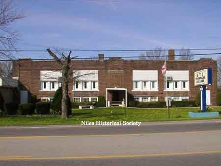
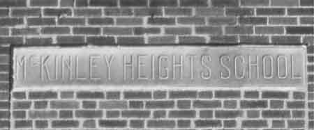

|
Harrison School on Route 422 was a brick building with three classrooms and a lunch room. P11.342 |
Harrison Elementary School. 1984 Times Special Edition–By Mary Jane
Steffey A one-room school, about one half mile north on Route 422, accomodated the children of the residents. This school taught grades one through eight. Some of the older boys were called on the attend to the janitor work, such as shoveling snow, etc. Children were expected to get to school by their own transportation. School buses were non-existent. The children attended this school until 1918, when a new two room brick school was built on property about one fourth mile south on the same side of the road. It was called McKinley School. In Niles the high school, which opened in 1917, was named Niles High School. In 1957, the new Niles high school was named Niles McKinley High School. Two years later it was enlarged to four rooms and was acquired by the Niles City School System. The Niles Board renamed the school Harrison School. Students used this school until 1955. Now they are bused to schools within the city limits of Niles. M.E. Riley bought the Harrison School in 1965 and turned it into a Technical School, teaching Drafting, Air Conditioning, Refrigeration, and Electronics. It has been expanded to eight classrooms and laboratories, and two other buildings have been added to the educational complex. |
|
| |
||
 |
Two different views of A.T.E.S. School Building which later was renamed ETI. |
 The school was originally named McKinley Heights School as evidences by the name plate that was affixed in the center of the building above the front entrance. |
|
|
||
{kind=link}
{kind=link}